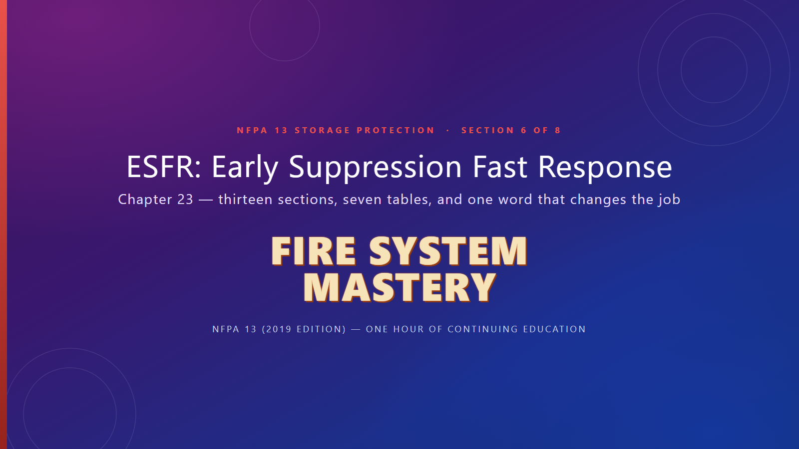

FIRE SYSTEMMASTERY
Illinois OSFM Approved
NFPA 13 Storage · Section 6 of 8
NFPA 13 Storage · Section 6 of 8
Watch all 17 slides with narration, then pass the 10-question test to unlock Section 7.

Answer all 10 questions, then submit.
Section 7 — In-Rack Sprinklers — is now unlocked.
Your progress is saved in this browser. Come back to the course page to pick up where you left off.
Questions? Email maurice@firesystemmastery.com.